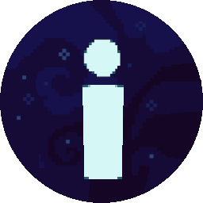
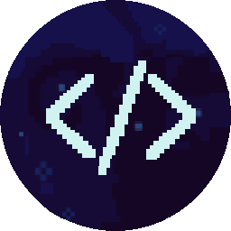
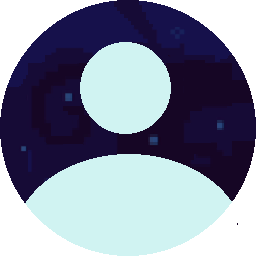
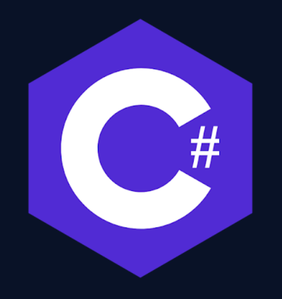
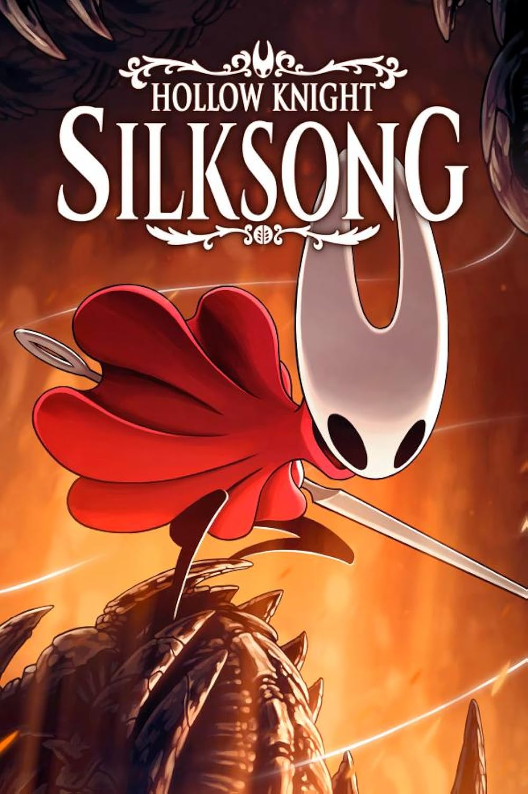

MY PERSONAL WEBSITE
WELCOME TO MY PERSONAL WEBSITE

About

Projects

WELCOME TO MY PERSONAL WEBSITE




Hello, and thank you for reading! I started coding when I was about 13 years old. My first programming language was Python. I chose Python because it is one of the easier languages to learn, which allowed me to focus on understanding the basics of programming. After learning concepts such as loops, classes, functions, and more, I started making a few projects using Pygame. This helped me improve my programming skills and gave me more experience with actually building things. Now, I am learning C# at school. I am still fairly new to it, but I already know some of the most important concepts and I am continuing to learn and improve. Also, thanks to StarDance, I learned JavaScript and HTML.
My favorite games are The Binding of Isaac,
Hollow Knight, Silksong, and Celeste.
I like these games because they all have interesting
gameplay and unique styles.
The Binding of Isaac is fun because of its many
different items and combinations,
while Hollow Knight and Silksong have a
really interesting world to explore.
I also like Celeste because of its challenging but satisfying
platforming and the way the game tells its story.
Also I've 112% hollow knight

I also really enjoy playing
games on my 3DS.
My favorite games on it are
Pokémon Black and
Pokémon Platinum.
Sometimes I also play randomized
versions of Pokémon games,
which makes the games feel
a bit different each time.
Outside of Pokémon, I also
play games like WarioWare Gold
and Luigi’s Mansion.
I’m also really interested
in homebrewing and
like experimenting with my consoles,
especially my 3DS, PS4, and Wii.

Some of the things I've made, worked on, or experimented with.
Future OS is one of my web projects where I tried to create my own operating system interface using HTML, CSS, and JavaScript. It has windows, apps, a taskbar, and different interactive elements. I wanted it to feel like an actual small operating system instead of just being a normal website. this was for one of the missons in stardance
I have also worked on my own 2D game using Python and Pygame. I made the game without using a big game engine, which helped me understand how things like movement, collisions, animations, maps, NPCs, and different game systems actually work. it in my githud "it-olimpiada" is the name of the project
One of the things I want to work more on is Nintendo 3DS homebrew. I am interested in learning how games and applications work on the hardware and eventually making my own small 3DS game or experimenting with porting a simple game to the console. am still trying to learn how to make a 3DS homebrew game, so i dont have much to show
I also make smaller websites and experiments using HTML, CSS, and JavaScript. I like trying different designs and making interactive interfaces, especially ones that look more like an operating system or an old computer.